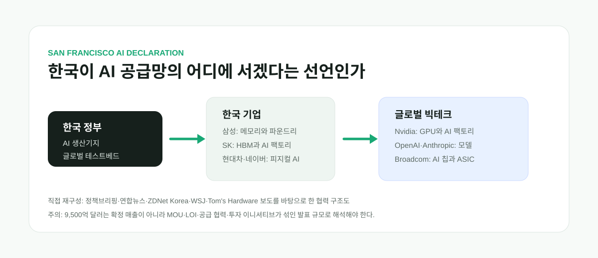

샌프란시스코 AI 선언: 한국은 정말 AI 공급망의 핵심국가가 될 수 있나
2026년 7월 24일 현지시간, 미국 샌프란시스코에서 보기 드문 장면이 만들어졌다. 이재명 대통령이 주재한 샌프란시스코 AI 서밋에 OpenAI의 샘 올트먼, Nvidia의 젠슨 황, Anthropic의 다리오 아모데이, Broadcom의 혹 탄이 나왔고, 한국에서는 삼성전자 이재용, SK 최태원, 현대차 정의선, 네이버 이해진이 같은 무대에 섰다. 한국 입장에서는 단순한 해외 순방 행사가 아니라, AI 시대의 산업 지도를 다시 그리겠다는 공개 선언에 가깝다.
AI Supply Chain
이 선언의 핵심은 “한국이 AI를 잘 쓰겠다”가 아니라 “AI가 돌아가는 생산망을 잡겠다”는 것이다
이 대통령은 샌프란시스코 AI 선언에서 한국을 글로벌 AI 생산기지이자 협력 플랫폼으로 만들겠다는 구상을 밝혔다. 연합뉴스와 ZDNet Korea에 따르면 행사에서는 반도체 공급, AI 데이터센터, AI 팩토리, 피지컬 AI를 아우르는 최대 9,500억 달러 규모의 협력 구상이 발표됐다. 다만 이 숫자는 이미 확정된 매출이 아니라 MOU, LOI, 장기 공급 협력, 투자 이니셔티브가 섞인 발표 규모로 봐야 한다.

그날 실제로 누가 모였나
행사 장소는 미국 샌프란시스코의 The Midway로 보도됐다. 대통령실과 정책브리핑에 따르면 이 대통령은 24일 현지에서 Anthropic, OpenAI, Nvidia, Broadcom의 CEO들과 잇달아 면담했다. 이후 샌프란시스코 AI 서밋과 글로벌 AI 리더 만찬이 이어졌다. 한국 시간으로는 7월 25일부터 국내 보도가 본격화됐고, 26~27일에는 주요 경제지와 IT 매체가 후속 분석을 냈다.
참석자 명단이 이 뉴스의 무게를 말해준다. 모델 쪽에서는 OpenAI의 샘 올트먼과 Anthropic의 다리오 아모데이가 있었다. AI 컴퓨팅 쪽에서는 Nvidia의 젠슨 황이 있었고, 맞춤형 AI 칩과 네트워크·ASIC 영역에서는 Broadcom의 혹 탄이 있었다. 한국 쪽에서는 삼성전자 이재용 회장, SK그룹 최태원 회장, 현대차그룹 정의선 회장, 네이버 이해진 의장이 함께했다. 연합뉴스는 Microsoft의 사티아 나델라 CEO도 영상으로 참여했다고 보도했다.
이 조합은 평범한 경제사절단이 아니다. AI 모델 회사, GPU 회사, ASIC 회사, 메모리 반도체 회사, 자동차·로봇 회사, 검색·플랫폼 회사가 한 테이블에 앉은 셈이다. AI 산업을 하나의 제품으로 보면 모델이 앞에 보이지만, 실제로는 GPU, HBM, 네트워크, 데이터센터 전력, 냉각, 제조 데이터, 로봇, 클라우드 운영이 함께 돌아가야 한다. 그 공급망의 여러 문지기들이 같은 자리에 모였다는 점이 이 행사의 상징성이다.
선언의 메시지: 부품 공급국을 넘어 생산 플랫폼으로
이 대통령이 내세운 표현은 “대체 불가능한 글로벌 AI 공급망의 핵심 국가”다. 이 말은 한국이 단순히 HBM이나 메모리 반도체를 많이 파는 나라에 머물지 않겠다는 뜻으로 읽힌다. 한국의 강점인 메모리 반도체와 제조업, 안정적인 생산 능력, 빠른 기술 수용성을 묶어 AI 생산기지와 실증 플랫폼이 되겠다는 구상이다.
정책브리핑은 이 대통령이 Anthropic의 다리오 아모데이와 만나 한국이 아시아 AI 인프라 핵심 거점이 될 수 있다고 강조했다고 전했다. 아모데이는 한국 기업과의 협력에 높은 우선순위를 두고 있다고 답했고, 메모리 제조업체와 AI 데이터센터 등 여러 분야의 투자를 언급했다. 이 부분은 한국이 모델 회사의 단순 고객이 아니라, 모델 회사가 아시아 인프라를 짤 때 고려하는 파트너가 되려 한다는 의미가 있다.
OpenAI의 샘 올트먼과의 면담에서는 3대 메가 프로젝트가 언급됐다. 정책브리핑에 따르면 이 대통령은 국가 AI 경쟁력 강화를 위한 반도체, AI 데이터센터, 피지컬 AI 프로젝트를 설명했고, OpenAI가 핵심 협력 파트너로 관심과 참여를 이어가길 기대한다고 밝혔다. 올트먼은 한국이 OpenAI의 중요한 협력국 중 하나라고 말했다고 보도됐다.
Nvidia의 젠슨 황과의 면담에서는 GPU 공급과 국가 AI 역량이 연결됐다. 정책브리핑은 이 대통령이 지난해 APEC 정상회의에서 약속된 Nvidia GPU 공급이 원활히 이행되면서 한국 메가 프로젝트도 추진되고 있다고 말했다고 전했다. 젠슨 황은 한국의 “AI 네이티브 국가” 비전을 긍정적으로 평가했고, KAIST 공동 AI 연구소 설립 계획과 한국 기업과의 협력을 소개했다.
숫자로 보도된 협력: 9,500억 달러의 의미
가장 크게 보도된 숫자는 9,500억 달러, 원화로 약 1,390조~1,400조 원이다. 연합뉴스는 한국과 미국 주요 기업들이 반도체, AI 데이터센터, AI 팩토리, 로봇, 자율주행을 아우르는 약 9,500억 달러 규모의 협력에 나섰다고 보도했다. ZDNet Korea도 총 9,500억 달러 규모의 반도체 공급·생산 협력과 5GW 규모 AI 데이터센터 구축 협력이 포함됐다고 전했다.
하지만 이 숫자는 조심해서 읽어야 한다. 기사에 나오는 표현은 “협력”, “추진”, “의향서”, “전략적 파트너십”, “투자 이니셔티브”가 섞여 있다. 즉 오늘 당장 매출로 잡히는 확정 계약 1,400조 원이 아니다. 정부와 기업이 앞으로 몇 년간 추진할 공급, 생산, 데이터센터, 인프라 협력의 최대 규모로 보는 편이 맞다.
삼성전자는 Broadcom과 2026년부터 2030년까지 5년간 약 2,000억 달러 규모의 첨단 메모리 반도체 공급과 AI 칩 생산을 위한 파운드리 협력을 추진한다고 보도됐다. Broadcom은 맞춤형 AI 반도체, 네트워크, ASIC 설계에서 강한 회사다. Nvidia가 범용 GPU 생태계의 중심이라면 Broadcom은 대형 고객의 자체 AI 칩 전략을 돕는 축이다. 삼성 입장에서는 메모리 공급뿐 아니라 파운드리 반등의 기회로 연결될 수 있다.
SK그룹과 Nvidia는 5,000억 달러 이상 규모의 포괄적 파트너십을 추진한다고 보도됐다. 연합뉴스는 두 회사가 협력 계획 구체화를 위한 LOI를 체결하고 국내 2GW 규모의 AI 클라우드와 AI 팩토리 구축을 추진한다고 전했다. SK하이닉스의 HBM4가 탑재된 Nvidia Vera Rubin 가속 컴퓨팅 시스템 도입도 보도됐다. 이 부분은 한국 HBM이 Nvidia 생태계 안에서 더 장기적인 수요 가시성을 얻을 수 있다는 점에서 중요하다.
네이버는 Nvidia와 Brookfield의 투자·지원을 바탕으로 소버린 AI 팩토리 구축 규모를 크게 확대한다고 보도됐다. WSJ는 Nvidia가 네이버의 대규모 AI 데이터센터 개발을 지원하기 위해 약 10억 달러를 투자할 예정이라고 전했다. 이 보도는 해외 시장이 이 뉴스를 단순한 대통령 행사보다 “AI 인프라 투자”와 “한국 소버린 AI”의 관점에서 보고 있음을 보여준다.
현대차그룹은 피지컬 AI의 축으로 등장했다. 자동차 제조, 로보틱스, 데이터 역량을 바탕으로 도시 단위 통합 지능화와 로봇 생태계를 확장하겠다는 그림이다. Nvidia와 로봇 레퍼런스 플랫폼을 공동 구축하고, Waymo와 자율주행 생태계 협업을 추진한다는 보도가 나왔다. AI가 화면 안의 챗봇에서 공장, 물류, 자동차, 로봇으로 이동할 때 현대차가 맡을 수 있는 역할을 보여주는 대목이다.
해외에서는 어떻게 봤나
해외 보도는 국내 보도처럼 “국가 비전”이라는 표현만 반복하지 않았다. WSJ는 Nvidia의 네이버 투자와 Brookfield가 얽힌 AI 데이터센터 프로젝트를 별도 뉴스로 다루며, 한국 AI 생태계의 인프라 확장에 초점을 맞췄다. 글로벌 투자자에게 이 사건은 대통령의 선언보다 “Nvidia가 한국의 소버린 AI 인프라에 지분을 넣는가”라는 질문으로 읽힌다.
Barron's는 Nvidia가 SK하이닉스와 장기 AI 메모리 공급 협력을 추진한다는 점을 Nvidia 주가와 반도체 섹터 흐름 속에서 다뤘다. 이 시선은 한국 입장에서 중요하다. 해외 시장은 한국을 “AI 모델 경쟁자”라기보다 Nvidia와 OpenAI, 대형 클라우드가 필요로 하는 메모리와 데이터센터 공급망의 핵심 축으로 보고 있다.
Tom's Hardware는 행사 전부터 삼성과 SK하이닉스가 미국 빅테크와 대형 전략 계약을 발표할 가능성을 보도하며, 한국 대통령의 실리콘밸리 방문을 HBM과 데이터센터 투자 확대의 맥락에 놓았다. 이 보도는 다른 나라가 쉽게 흉내 내기 어려운 한국의 위치를 잘 보여준다. AI 정상회의를 열 수는 있어도, 그 자리에 HBM 세계 최상위 기업과 자동차 제조, 검색 플랫폼, 글로벌 빅테크 수요자를 동시에 묶는 나라는 많지 않다.
Times of India와 Bloomberg HT 같은 해외 매체도 이 뉴스를 한국과 미국 기업 간 9,500억 달러 규모 AI 협력으로 전했다. 특히 Bloomberg HT는 고속 AI 칩 공급 병목을 풀기 위한 한국의 대형 글로벌 파트너십으로 해석했다. 이것은 한국이 단순한 지역 시장이 아니라, AI 공급망 병목을 풀 수 있는 후보지로 읽히고 있다는 뜻이다.
미국의 Korea Economic Institute of America는 행사 전 분석에서 이 서밋의 핵심 성장 동력을 HBM과 대규모 데이터센터 구축 의지로 봤다. 이는 정부 발표보다 더 차갑고 현실적인 시선이다. 결국 해외 전문가들이 보는 한국의 강점은 “AI를 잘 쓰겠다는 의지”가 아니라 “HBM을 만들고, 데이터센터를 지을 수 있고, 제조 현장에 AI를 적용할 수 있는 국가 역량”이다.
다른 나라가 쉽게 못 하는 이유
사용자 말처럼, 이건 한국이라 가능한 면이 있다. 많은 나라가 AI 강국이 되고 싶다고 말하지만, 실제로 OpenAI, Nvidia, Anthropic, Broadcom을 한자리에 부르고 그 옆에 삼성, SK, 현대차, 네이버를 세워 “공급망”을 이야기할 수 있는 나라는 많지 않다. 이유는 간단하다. AI는 이제 소프트웨어만의 게임이 아니기 때문이다.
첫째, 메모리 반도체가 있어야 한다. HBM은 AI 가속기의 핵심 병목이고, 한국은 SK하이닉스와 삼성전자를 통해 이 영역에서 세계 최상위권 생산 능력을 갖고 있다. 둘째, 제조 현장이 있어야 한다. 피지컬 AI와 AI 팩토리는 공장, 자동차, 로봇, 물류 데이터를 가진 나라가 유리하다. 셋째, 전력과 데이터센터를 감당할 산업 기반이 있어야 한다.
유럽은 규제와 연구 역량은 강하지만, HBM과 대규모 AI 하드웨어 공급망에서는 한국만큼 직접적인 카드를 갖기 어렵다. 일본은 제조와 소재 강점이 있지만, 현재 글로벌 AI 메모리 병목에서 한국 기업만큼 즉각적인 영향력을 행사하기 어렵다. 중동 국가는 자본과 전력, 부지는 있지만 첨단 메모리와 제조 생태계가 약하다. 동남아와 인도는 시장과 인재가 있지만, AI 반도체 생산망의 핵심 고리를 쥐고 있지는 않다.
그래서 해외에서 이 뉴스를 보는 시선은 솔직하다. 한국이 갑자기 OpenAI 같은 모델 회사를 만들었다는 이야기가 아니다. 대신 AI 시대에 모두가 필요로 하는 물리적 기반, 즉 메모리, 데이터센터, 제조 실증, 피지컬 AI의 결절점으로 올라설 수 있다는 이야기다. 이 지점이 한국의 진짜 협상력이다.
이 장면을 너무 낙관적으로만 보면 안 되는 이유
이번 행사는 상징성이 크지만, 상징이 곧 실행은 아니다. MOU와 LOI는 방향을 보여주지만, 실제 계약, 설비 투자, 장비 납품, 데이터센터 착공, 전력 확보, 고객 확보로 이어져야 의미가 있다. 한국경제와 한겨레 등은 실행력, 규제 혁파, 전력과 인재, AI 주권 문제가 뒤따라야 한다고 지적했다.
특히 “9,500억 달러”라는 숫자는 기사 제목에 쓰기 좋지만, 독자에게 오해를 줄 수 있다. 발표 규모 전체를 확정 매출처럼 받아들이면 위험하다. 기업 입장에서는 장기 수요를 확인했다는 의미가 크지만, 글로벌 AI 투자가 둔화하거나 특정 모델 회사의 수익성이 흔들리면 일부 계획은 조정될 수 있다.
또 하나의 질문은 AI 주권이다. 한국이 Nvidia GPU와 OpenAI, Anthropic 모델에 깊게 연결되는 것은 단기적으로 강력한 전략이지만, 장기적으로는 외부 플랫폼 의존을 키울 수도 있다. 한국이 진짜 AI 핵심국가가 되려면 남의 모델과 GPU를 잘 쓰는 데서 멈추지 않고, 자체 모델, 자체 추론 인프라, 산업 데이터 활용 능력, 보안과 규제 설계까지 같이 키워야 한다.
전력도 현실적인 병목이다. 5GW급 AI 데이터센터는 국가 전력망과 지역 인프라에 큰 부담을 준다. 데이터센터를 짓겠다는 말은 쉬워도, 어디에 짓고, 어떤 전기를 쓰고, 냉각은 어떻게 하고, 지역 주민과 산업용 전기요금 부담은 어떻게 조정할지 답해야 한다. 미국에서도 AI 데이터센터는 이미 지역 전기요금과 전력망 이슈로 충돌하고 있다.
한국 기업별로 봐야 할 포인트
삼성전자의 관전 포인트는 메모리와 파운드리를 동시에 살릴 수 있느냐다. Broadcom과의 협력은 단순 HBM 공급을 넘어 AI 칩 생산 파운드리와 연결될 수 있다. 삼성 파운드리가 최첨단 AI 칩 생산에서 신뢰를 회복한다면, AI 붐은 삼성에게 메모리 사이클 이상의 기회가 된다.
SK그룹의 관전 포인트는 HBM과 AI 데이터센터를 하나의 패키지로 묶는 능력이다. SK하이닉스는 HBM에서 강한 위치를 갖고 있고, SK텔레콤과 그룹 차원의 데이터센터·클라우드 투자는 아시아 AI 인프라 거점 구상과 맞물린다. Nvidia와의 장기 협력이 실제 장비와 고객 확보로 이어지는지가 중요하다.
네이버의 관전 포인트는 소버린 AI다. 한국어와 한국 데이터, 국내 규제 환경에 맞는 AI 인프라를 독자적으로 운영하려면 모델만으로는 부족하다. GPU, 데이터센터, 투자자, 글로벌 파트너가 필요하다. Nvidia와 Brookfield 협력이 사실상 네이버의 AI 인프라 체급을 키우는 발판이 될 수 있는지 봐야 한다.
현대차의 관전 포인트는 피지컬 AI다. AI가 공장과 자동차, 로봇으로 들어가면 제조 데이터와 현장 운영 능력이 중요해진다. 현대차가 Nvidia, Waymo와의 협력을 통해 로봇과 자율주행 생태계에서 플랫폼 역할을 할 수 있다면, 한국의 제조 기반은 AI 응용의 실험장이 될 수 있다.
앞으로 확인할 것
첫째, 삼성-Broadcom 협력이 실제 주문과 파운드리 생산으로 얼마나 연결되는지 봐야 한다. 둘째, SK-Nvidia 협력에서 2GW AI 클라우드와 AI 팩토리의 부지, 전력, 장비 도입 일정이 구체화되는지 확인해야 한다. 셋째, 네이버의 AI 팩토리 확장에 Nvidia와 Brookfield의 자금과 장비가 실제로 들어오는지 봐야 한다.
넷째, 정부의 3대 AI 메가프로젝트가 규제 완화와 전력망 투자, 인재 양성, 지역 수용성 문제를 풀 수 있는지 확인해야 한다. 다섯째, 한국 자체 모델과 소버린 AI 전략이 글로벌 빅테크 협력 속에서 약해지는 것이 아니라 오히려 강화되는지 봐야 한다.
결론
샌프란시스코 AI 선언은 한국 AI 산업사에서 꽤 큰 장면으로 남을 가능성이 있다. OpenAI, Nvidia, Anthropic, Broadcom, 삼성, SK, 현대차, 네이버가 동시에 등장한 것만으로도 상징성은 충분하다. 한국이 AI 시대의 후방 부품 공급자가 아니라, AI가 생산되고 검증되고 확산되는 플랫폼이 되겠다고 말한 순간이기 때문이다.
하지만 진짜 승부는 선언문이 아니라 실행이다. 9,500억 달러라는 숫자보다 중요한 것은 5년 뒤 한국에 실제 AI 데이터센터가 얼마나 지어졌는지, HBM과 파운드리 공급이 얼마나 안정적으로 이어졌는지, 한국 기업이 자체 AI 서비스와 피지컬 AI 시장을 얼마나 만들었는지다. 이번 뉴스는 “성공했다”는 결론이 아니라, 한국이 AI 공급망 경쟁의 중심 무대에 올라섰다는 출발 신호로 보는 게 가장 정확하다.
출처 링크
- 대한민국 정책브리핑: 이 대통령, Anthropic·OpenAI·Nvidia·Broadcom 대표 면담
- 연합뉴스: 한미 빅테크 1,400조원 AI 동맹
- ZDNet Korea: 반도체·AIDC 협력 발표
- Wall Street Journal: Nvidia to invest in Naver's AI project
- Tom's Hardware: Samsung and SK Hynix expected to announce major AI deals
- Times of India: South Korea chipmakers to supply US firms in $950 billion deals
- Korea Economic Institute of America: What the San Francisco AI Summit means for U.S.-Korea tech cooperation
- 한겨레 영문 사설: Korea’s AI upgrade and remaining challenges
- Korea.net: President Lee to make Korea irreplaceable in AI supply chains
이미지 사용 안내
본문의 구조도는 직접 제작한 SVG다. 연합뉴스, 뉴스1, 한국경제, 전자신문, ZDNet Korea 등에 실린 행사 사진은 저작권상 재게시하지 않고 출처 링크로만 남겼다.